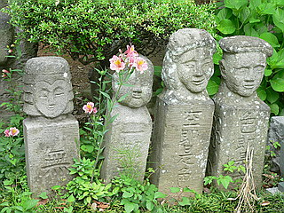

埼玉県の北部、栗橋町の外れに羅漢の寺と謳われた定福院がある。
羅漢の寺かぁ…
門前に立つ仁王像の佇まいから何となく境内の様子が想像できるような出来ないような…
門を潜ると…
ああ〜、やっぱこんな感じかぁ〜〜〜〜！！
境内には石像、石像また石像。
奇妙な石像がすきま無くズラリと並んでいた。
本堂では法事が行われていたので中の様子は窺い知る事が出来なかった。
もっとも本堂の中の様子などアウトオブサイト。
だってこんな石像が庭にてんこ盛りなんすから。
作風としてはかなり素人彫刻といってイイかと思う。
しかし素人ゆえの思いっきりのよさとハチャメチャ具合が逆に面白過ぎ。
般☆若☆心☆経 生首。
色即是空で波羅僧羯諦ですなあ〜。

加西の五百羅漢を髣髴とさせるマッチ棒のような羅漢…って羅漢じゃないし、ジャイアントロボ混ざってるし。

最早、羅漢である、というテーゼさえ完全シカト。
ただただ作りたいモノを作ってます。
それにしても作りに作ったその羅漢世界の極北。
| ゼニ！ゼニですがな〜 | ピアス入れてみました。 | |
迦楼羅ですがな〜 |
目だけ材質の違う石、入れてみました |
|
股覗きですがな〜 |
フンドシ付けてみました |
|
 |
||
タイ…だと思います |
見た目和風だが趣向は欧風 |
|
かくれんぼしてますねん |
インド旅行ですねん |
|
さて、このような奇妙奇天烈な羅漢（だけじゃないけど）だらけになった背景を説明せねばなるまい。
この石像群、住職の発案を受けて平成元年に結成された定福院羅漢を彫る会のメンバーが制作している。
「仏像彫刻の約束に縛られず自由に彫る」という姿勢でそれぞれの仏教観から各々好きなモチーフの石像を彫り始めたという。
この年、20人余が参加し24体彫った。
そして
| 平成２年 | 36体 | |
| 平成３年 | 35体 | |
| 平成４年 | 59体 | 仁王像 |
| 平成５年 | 50体 |
と、毎年コンスタントに、しかもかなりの数の石像が彫られ、今では羅漢さん圧縮陳列状態。
「仏は心の中にいる 誰も干渉しない、場の提供 それぞれが考える仏教」
「彫る人ひとりひとりが心を込め無心になって制作したものはそれがたとえどんな姿でも、何ものにも代え難いものである」
といった住職の言葉から窺い知れるように仏教の教義でガチガチに縛るのではなく、それぞれがオレ流仏教の開祖として自分にとって仏とは何かを考えつつ表現していくのだ。
「一体彫ったらみな先生」を合言葉にこれからも境内の石像は益々増えていく事だろう。
なので、団子三兄弟とかドラえもんとかも彫った人にしてみればバリバリ菩薩の一種なのである…いや、違うかな…
この日も何人かのメンバーが制作をしていた。
みな真剣な面持ちでオレ仏教を極めていた様子。
大割りして墨入れだけしてある石はこれから仏になっていくのであろう。
駐車場の脇には四国八十八ヵ所の写し本尊が並んでいる。

恐らく近年のモノなのだろう。技術がググッとアップしているのが伺える。
何といっても長い人は20年近くも彫っている訳で、仏師、とまではいかないまでもセミプロとしては十二分のキャリアであろう。
これからもがんがんオレ流仏教を極めていただきたいものである。
がんばってね！
参考文献
＝羅漢と語ろう＝定福院 1996刊
情報提供はまんじまるさんです